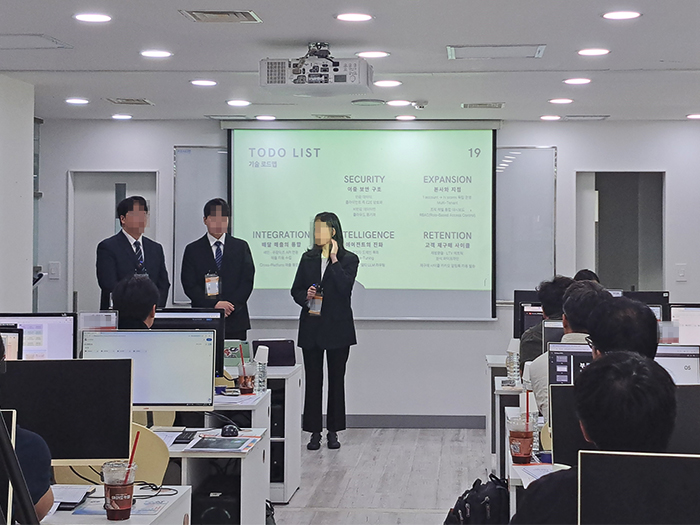

HIMEDIA STUDENT STORIES
배운 다음,
달라진 이야기.
혼자 고민하던 시간에서, 함께 만들어낸 결과로.
수강생이 직접 전하는 프로젝트와 성장의 기록.
K-DIGITAL 심화과정경험이 다음 시작의 힌트가 되도록.

01 / THE REVIEW ARCHIVE하이미디어를 경험한 사람들
각자의 시작,
우리의 다음.
프로젝트부터 취업까지, 궁금했던 경험을 찾아보세요.
7개의 이야기가
기다리고 있어요.
기다리고 있어요.
전체 7개의 이야기
조건에 맞는 이야기가 없어요.
다른 검색어를 입력하거나 전체 후기를 확인해 보세요.
02 / BUILT BY STUDENTS기획에서 구현까지, 직접 만든 결과물
STUDENT PROJECTS
배웠다는 말 대신,
만들어낸 프로젝트.
하이미디어 수강생의 실제 프로젝트를 만나보세요.
03 / FIND YOUR START
개발이 처음이라면,
기초부터 시작하세요.
생성형 AI를 활용한 자바(JAVA) 풀스택 개발자
(SpringBoot & React.js)
- 01Java 기초부터 차근차근
- 02Spring Boot · React 풀스택 개발
- 03AI 서비스 프로젝트 · 포트폴리오
기초 개발자 과정 안내입니다. 상세 내용과 모집 일정은 고용24에서 확인해 주세요.